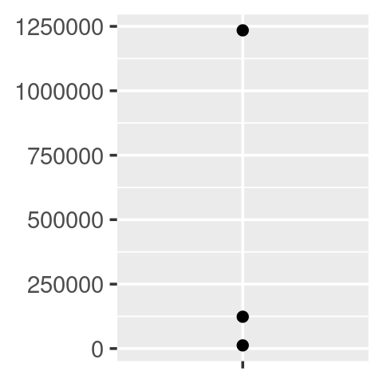
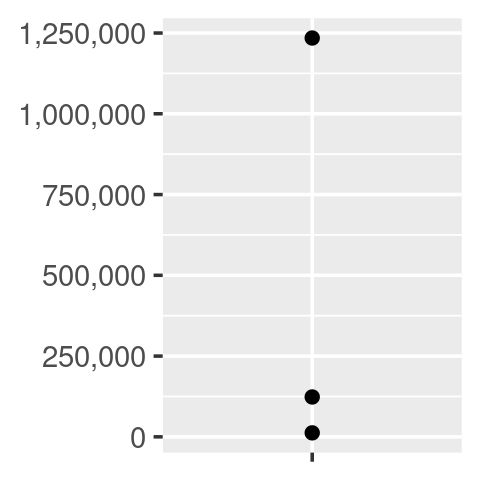
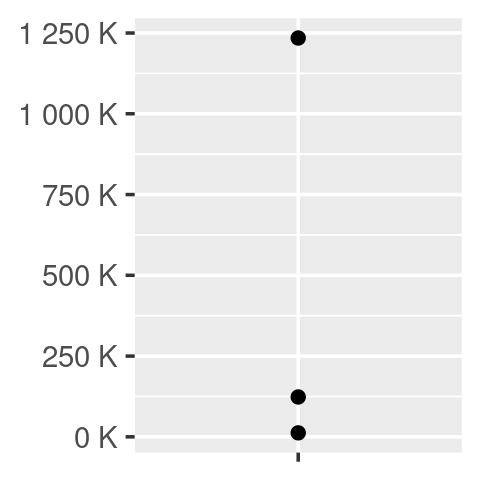
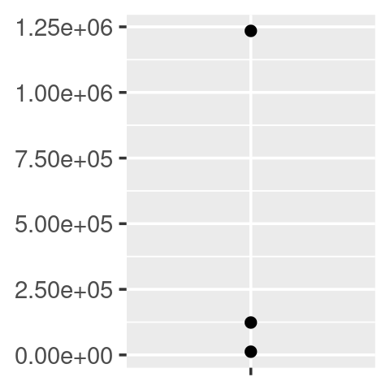
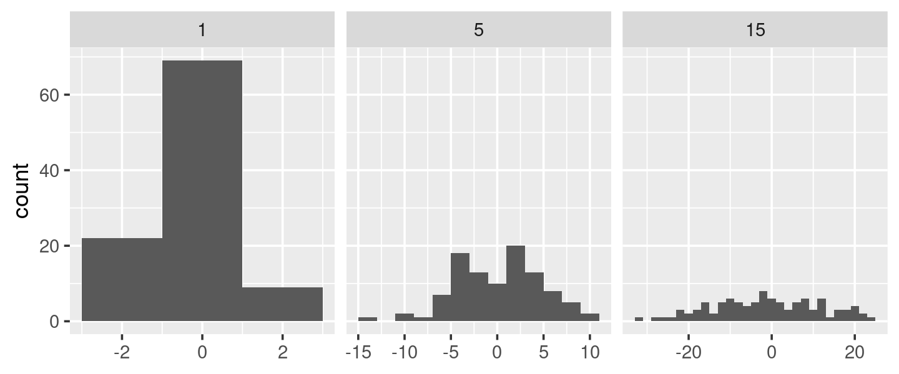
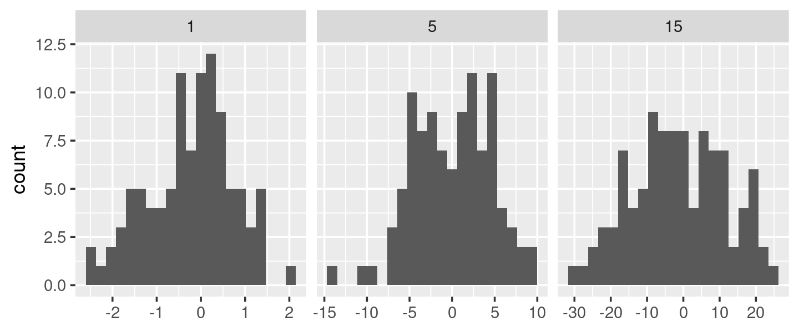
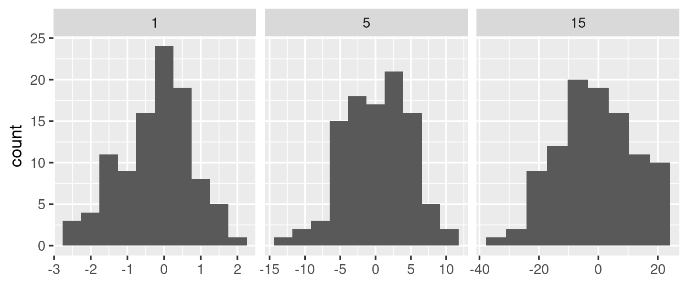
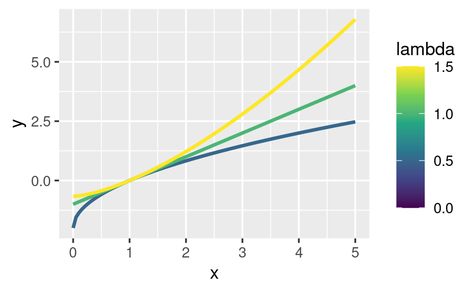
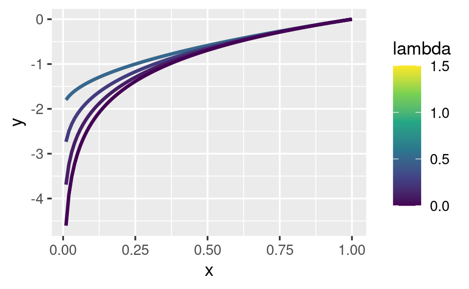

power1 <- function(exp) {
function(x) {
x ^ exp
}
}
square <- power1(2)
cube <- power1(3)10 Fábricas de funciones
10.1 Introducción
Una fábrica de funciones es una función que hace funciones. Aquí hay un ejemplo muy simple: usamos una fábrica de funciones (power1()) para hacer dos funciones secundarias (square() y cube()):
No se preocupe si esto aún no tiene sentido, ¡debería tenerlo al final del capítulo!
Llamaré square() y cube() funciones fabricadas, pero este es solo un término para facilitar la comunicación con otros humanos: desde la perspectiva de R, no son diferentes a las funciones creadas de otra manera.
square(3)
#> [1] 9
cube(3)
#> [1] 27Ya ha aprendido acerca de los componentes individuales que hacen posibles las fábricas de funciones:
En la Sección 6.2.3, aprendiste sobre las funciones de primera clase de R. En R, vinculas una función a un nombre de la misma manera que vinculas cualquier objeto a un nombre: con
<-.En la Sección 7.4.2, aprendiste que una función captura (encierra) el entorno en el que se crea.
En la Sección 7.4.4, aprendió que una función crea un nuevo entorno de ejecución cada vez que se ejecuta. Este entorno suele ser efímero, pero aquí se convierte en el entorno envolvente de la función fabricada.
En este capítulo, aprenderá cómo la combinación no obvia de estas tres funciones conduce a la fábrica de funciones. También verá ejemplos de su uso en visualización y estadísticas.
De las tres principales herramientas de programación funcional (funcionales, fábricas de funciones y operadores de funciones), las fábricas de funciones son las menos utilizadas. En general, no tienden a reducir la complejidad general del código, sino que dividen la complejidad en fragmentos más fáciles de digerir. Las fábricas de funciones también son un bloque de construcción importante para los muy útiles operadores de funciones, sobre los cuales aprenderá en el Capítulo 11.
Estructura
La Sección 10.2 comienza el capítulo con una explicación de cómo funcionan las fábricas de funciones, reuniendo ideas del alcance y los entornos. También verá cómo se pueden usar fábricas de funciones para implementar una memoria para funciones, lo que permite que los datos persistan entre llamadas.
La Sección 10.3 ilustra el uso de fábricas de funciones con ejemplos de ggplot2. Verá dos ejemplos de cómo funciona ggplot2 con fábricas de funciones proporcionadas por el usuario y un ejemplo de cómo ggplot2 usa una fábrica de funciones internamente.
La Sección 10.4 utiliza fábricas de funciones para abordar tres desafíos de las estadísticas: comprender la transformación de Box-Cox, resolver problemas de máxima verosimilitud y dibujar remuestreos de arranque.
La Sección 10.5 muestra cómo puede combinar fábricas de funciones y funcionales para generar rápidamente una familia de funciones a partir de datos.
Requisitos previos
Asegúrese de estar familiarizado con el contenido de las Secciones Sección 6.2.3 (funciones de primera clase), Sección 7.4.2 (el entorno funcional) y Sección 7.4.4 (entornos de ejecución) mencionados anteriormente.
Las fábricas de funciones solo necesitan base R. Usaremos un poco de rlang para mirar dentro de ellas más fácilmente, y usaremos ggplot2 y scales para explorar el uso de fábricas de funciones en la visualización.
library(rlang)
library(ggplot2)
library(scales)10.2 Fundamentos de fábrica
La idea clave que hace que las fábricas de funciones funcionen se puede expresar de manera muy concisa:
El entorno envolvente de la función fabricada es un entorno de ejecución de la fábrica de funciones.
Solo se necesitan unas pocas palabras para expresar estas grandes ideas, pero se necesita mucho más trabajo para entender realmente lo que esto significa. Esta sección te ayudará a juntar las piezas con exploración interactiva y algunos diagramas.
10.2.1 Entornos
Empecemos echando un vistazo a square() y cube():
square
#> function(x) {
#> x ^ exp
#> }
#> <environment: 0x56249ca67520>
cube
#> function(x) {
#> x ^ exp
#> }
#> <bytecode: 0x56249a774ab8>
#> <environment: 0x56249cad3258>Es obvio de dónde viene x, pero ¿cómo encuentra R el valor asociado con exp? La simple impresión de las funciones fabricadas no es reveladora porque los cuerpos son idénticos; los contenidos del entorno envolvente son los factores importantes. Podemos obtener un poco más de información usando rlang::env_print(). Eso nos muestra que tenemos dos entornos diferentes (cada uno de los cuales era originalmente un entorno de ejecución de power1()). Los entornos tienen el mismo padre, que es el entorno envolvente de power1(), el entorno global.
env_print(square)
#> <environment: 0x56249ca67520>
#> Parent: <environment: global>
#> Bindings:
#> • exp: <dbl>
env_print(cube)
#> <environment: 0x56249cad3258>
#> Parent: <environment: global>
#> Bindings:
#> • exp: <dbl>env_print() nos muestra que ambos entornos tienen un enlace a exp, pero queremos ver su valor 1. Podemos hacerlo obteniendo primero el entorno de la función y luego extrayendo los valores:
fn_env(square)$exp
#> [1] 2
fn_env(cube)$exp
#> [1] 3Esto es lo que hace que las funciones fabricadas se comporten de manera diferente entre sí: los nombres en el entorno adjunto están vinculados a valores diferentes.
10.2.2 Convenciones de diagrama
También podemos mostrar estas relaciones en un diagrama:

Están sucediendo muchas cosas en este diagrama y algunos de los detalles no son tan importantes. Podemos simplificar considerablemente usando dos convenciones:
Cualquier símbolo flotante libre vive en el entorno global.
Cualquier entorno sin un padre explícito hereda del entorno global.

Esta vista, que se centra en los entornos, no muestra ningún vínculo directo entre cube() y square(). Esto se debe a que el enlace se realiza a través del cuerpo de la función, que es idéntico para ambos, pero no se muestra en este diagrama.
Para terminar, veamos el entorno de ejecución de square(10). Cuando square() ejecuta x ^ exp, encuentra x en el entorno de ejecución y exp en su entorno adjunto.
square(10)
#> [1] 100
10.2.3 Evaluación forzada
Hay un error sutil en power1() causado por una evaluación perezosa. Para ver el problema necesitamos introducir alguna indirección:
x <- 2
square <- power1(x)
x <- 3¿Qué debería devolver square(2)? Esperarías que devuelva 4:
square(2)
#> [1] 8Desafortunadamente, no es así porque x solo se evalúa con pereza cuando se ejecuta square(), no cuando se ejecuta power1(). En general, este problema surgirá cada vez que cambie un enlace entre llamar a la función de fábrica y llamar a la función fabricada. Es probable que esto suceda rara vez, pero cuando sucede, conducirá a un verdadero error de rascado de cabeza.
Podemos solucionar este problema forzando la evaluación con force():
power2 <- function(exp) {
force(exp)
function(x) {
x ^ exp
}
}
x <- 2
square <- power2(x)
x <- 3
square(2)
#> [1] 4Cada vez que cree una fábrica de funciones, asegúrese de que se evalúen todos los argumentos, usando force() según sea necesario si el argumento solo lo usa la función fabricada.
10.2.4 Funciones con estado
Las fábricas de funciones también le permiten mantener el estado a través de las invocaciones de funciones, lo que generalmente es difícil de hacer debido al principio de nuevo comienzo descrito en la Sección 6.4.3.
Hay dos cosas que lo hacen posible:
El entorno envolvente de la función fabricada es único y constante.
R tiene un operador de asignación especial,
<<-, que modifica los enlaces en el entorno envolvente.
El operador de asignación habitual, <-, siempre crea un enlace en el entorno actual. El operador de superasignación, <<- vuelve a vincular un nombre existente que se encuentra en un entorno principal.
El siguiente ejemplo muestra cómo podemos combinar estas ideas para crear una función que registre cuántas veces ha sido llamada:
new_counter <- function() {
i <- 0
function() {
i <<- i + 1
i
}
}
counter_one <- new_counter()
counter_two <- new_counter()
Cuando se ejecuta la función fabricada, i <<- i + 1 modificará i en su entorno adjunto. Debido a que las funciones fabricadas tienen entornos envolventes independientes, tienen recuentos independientes:
counter_one()
#> [1] 1
counter_one()
#> [1] 2
counter_two()
#> [1] 1
Las funciones con estado se utilizan mejor con moderación. Tan pronto como su función comience a administrar el estado de múltiples variables, es mejor cambiar a R6, el tema del Capítulo 14.
10.2.5 Recolección de basura
Con la mayoría de las funciones, puede confiar en el recolector de basura para limpiar cualquier objeto temporal grande creado dentro de una función. Sin embargo, las funciones fabricadas se aferran al entorno de ejecución, por lo que deberá desvincular explícitamente cualquier objeto temporal grande con rm(). Compara los tamaños de g1() y g2() en el siguiente ejemplo:
f1 <- function(n) {
x <- runif(n)
m <- mean(x)
function() m
}
g1 <- f1(1e6)
lobstr::obj_size(g1)
#> 8.01 MB
f2 <- function(n) {
x <- runif(n)
m <- mean(x)
rm(x)
function() m
}
g2 <- f2(1e6)
lobstr::obj_size(g2)
#> 12.96 kB10.2.6 Ejercicios
La definición de
force()es simple:force #> function (x) #> x #> <bytecode: 0x562496d04ce0> #> <environment: namespace:base>Why is it better to
force(x)instead of justx?Base R contiene dos fábricas de funciones,
approxfun()yecdf(). Lea su documentación y experimente para descubrir qué hacen las funciones y qué devuelven.Cree una función
pick()que tome un índice,i, como argumento y devuelva una función con un argumentoxque subjuntexconi.pick(1)(x) # should be equivalent to x[[1]] lapply(mtcars, pick(5)) # should be equivalent to lapply(mtcars, function(x) x[[5]])Cree una función que cree funciones que calculen el ith momento central de un vector numérico. Puedes probarlo ejecutando el siguiente código:
m1 <- moment(1) m2 <- moment(2) x <- runif(100) stopifnot(all.equal(m1(x), 0)) stopifnot(all.equal(m2(x), var(x) * 99 / 100))¿Qué pasa si no usas un cierre? Haz predicciones, luego verifica con el siguiente código.
i <- 0 new_counter2 <- function() { i <<- i + 1 i }¿Qué sucede si usa
<-en lugar de<<-? Haz predicciones, luego verifica con el siguiente código.new_counter3 <- function() { i <- 0 function() { i <- i + 1 i } }
10.3 Fábricas gráficas
Comenzaremos nuestra exploración de fábricas de funciones útiles con algunos ejemplos de ggplot2.
10.3.1 Etiquetado
Uno de los objetivos del paquete scales es facilitar la personalización de las etiquetas en ggplot2. Proporciona muchas funciones para controlar los detalles finos de ejes y leyendas. Las funciones del formateador2 son una clase útil de funciones que facilitan el control de la aparición de roturas de ejes. El diseño de estas funciones inicialmente puede parecer un poco extraño: todas devuelven una función, a la que debe llamar para formatear un número.
y <- c(12345, 123456, 1234567)
comma_format()(y)
#> [1] "12,345" "123,456" "1,234,567"
number_format(scale = 1e-3, suffix = " K")(y)
#> [1] "12 K" "123 K" "1 235 K"En otras palabras, la interfaz principal es una fábrica de funciones. A primera vista, esto parece agregar una complejidad adicional por poca ganancia. Pero permite una buena interacción con las escalas de ggplot2, porque aceptan funciones en el argumento label:
df <- data.frame(x = 1, y = y)
core <- ggplot(df, aes(x, y)) +
geom_point() +
scale_x_continuous(breaks = 1, labels = NULL) +
labs(x = NULL, y = NULL)
core
core + scale_y_continuous(
labels = comma_format()
)
core + scale_y_continuous(
labels = number_format(scale = 1e-3, suffix = " K")
)
core + scale_y_continuous(
labels = scientific_format()
)



10.3.2 Contenedores de histograma
Una característica poco conocida de geom_histogram() es que el argumento binwidth puede ser una función. Esto es particularmente útil porque la función se ejecuta una vez para cada grupo, lo que significa que puede tener diferentes anchos de bin en diferentes facetas, lo que de otro modo no sería posible.
Para ilustrar esta idea y ver dónde podría ser útil el ancho de bin variable, voy a construir un ejemplo en el que un ancho de bin fijo no es muy bueno.
# construir algunos datos de muestra con números muy diferentes en cada celda
sd <- c(1, 5, 15)
n <- 100
df <- data.frame(x = rnorm(3 * n, sd = sd), sd = rep(sd, n))
ggplot(df, aes(x)) +
geom_histogram(binwidth = 2) +
facet_wrap(~ sd, scales = "free_x") +
labs(x = NULL)
Aquí cada faceta tiene el mismo número de observaciones, pero la variabilidad es muy diferente. Sería bueno si pudiéramos solicitar que los anchos de intervalo varíen para obtener aproximadamente el mismo número de observaciones en cada intervalo. Una forma de hacerlo es con una fábrica de funciones que ingresa el número deseado de contenedores (n) y genera una función que toma un vector numérico y devuelve un ancho de contenedor:
binwidth_bins <- function(n) {
force(n)
function(x) {
(max(x) - min(x)) / n
}
}
ggplot(df, aes(x)) +
geom_histogram(binwidth = binwidth_bins(20)) +
facet_wrap(~ sd, scales = "free_x") +
labs(x = NULL)
Podríamos usar este mismo patrón para envolver las funciones base de R que automáticamente encuentran el llamado binwidth óptimo 3, nclass.Sturges(), nclass.scott() y nclass .FD():
base_bins <- function(type) {
fun <- switch(type,
Sturges = nclass.Sturges,
scott = nclass.scott,
FD = nclass.FD,
stop("Unknown type", call. = FALSE)
)
function(x) {
(max(x) - min(x)) / fun(x)
}
}
ggplot(df, aes(x)) +
geom_histogram(binwidth = base_bins("FD")) +
facet_wrap(~ sd, scales = "free_x") +
labs(x = NULL)
10.3.3 ggsave()
Finalmente, quiero mostrar una fábrica de funciones utilizada internamente por ggplot2. ggplot2:::plot_dev() es utilizado por ggsave() para pasar de una extensión de archivo (por ejemplo, png, jpeg, etc.) a una función de dispositivo gráfico (por ejemplo, png(), jpeg( )). El desafío aquí surge porque los dispositivos gráficos básicos tienen algunas inconsistencias menores que debemos corregir:
La mayoría tiene
filenamecomo primer argumento, pero algunos tienenfile.El
widthyheightde los dispositivos gráficos de trama usan unidades de píxeles por defecto, pero los gráficos vectoriales usan pulgadas.
A continuación se muestra una versión levemente simplificada de plot_dev():
plot_dev <- function(ext, dpi = 96) {
force(dpi)
switch(ext,
eps = ,
ps = function(path, ...) {
grDevices::postscript(
file = filename, ..., onefile = FALSE,
horizontal = FALSE, paper = "special"
)
},
pdf = function(filename, ...) grDevices::pdf(file = filename, ...),
svg = function(filename, ...) svglite::svglite(file = filename, ...),
emf = ,
wmf = function(...) grDevices::win.metafile(...),
png = function(...) grDevices::png(..., res = dpi, units = "in"),
jpg = ,
jpeg = function(...) grDevices::jpeg(..., res = dpi, units = "in"),
bmp = function(...) grDevices::bmp(..., res = dpi, units = "in"),
tiff = function(...) grDevices::tiff(..., res = dpi, units = "in"),
stop("Unknown graphics extension: ", ext, call. = FALSE)
)
}
plot_dev("pdf")
#> function(filename, ...) grDevices::pdf(file = filename, ...)
#> <bytecode: 0x56249e915518>
#> <environment: 0x56249e6a1990>
plot_dev("png")
#> function(...) grDevices::png(..., res = dpi, units = "in")
#> <bytecode: 0x56249ea79258>
#> <environment: 0x56249ec959d8>10.3.4 Ejercicios
- Comparar y contrastar
ggplot2::label_bquote()conscales::number_format()
10.4 Fábricas estadísticas
Los ejemplos más motivadores para las fábricas de funciones provienen de las estadísticas:
- La transformación Box-Cox.
- Remuestreo Bootstrap.
- Estimación de máxima verosimilitud.
Todos estos ejemplos se pueden abordar sin fábricas de funciones, pero creo que las fábricas de funciones son una buena opción para estos problemas y brindan soluciones elegantes. Estos ejemplos requieren algunos antecedentes estadísticos, así que siéntase libre de omitirlos si no tienen mucho sentido para usted.
10.4.1 La transformación Box-Cox
La transformación de Box-Cox (un tipo de transformación de potencia) es una transformación flexible que a menudo se usa para transformar los datos hacia la normalidad. Tiene un solo parámetro, \(\lambda\), que controla la fuerza de la transformación. Podríamos expresar la transformación como una función simple de dos argumentos:
boxcox1 <- function(x, lambda) {
stopifnot(length(lambda) == 1)
if (lambda == 0) {
log(x)
} else {
(x ^ lambda - 1) / lambda
}
}Pero volver a formular como una fábrica de funciones facilita la exploración de su comportamiento con stat_function():
boxcox2 <- function(lambda) {
if (lambda == 0) {
function(x) log(x)
} else {
function(x) (x ^ lambda - 1) / lambda
}
}
stat_boxcox <- function(lambda) {
stat_function(aes(colour = lambda), fun = boxcox2(lambda), size = 1)
}
ggplot(data.frame(x = c(0, 5)), aes(x)) +
lapply(c(0.5, 1, 1.5), stat_boxcox) +
scale_colour_viridis_c(limits = c(0, 1.5))
#> Warning: Using `size` aesthetic for lines was deprecated in ggplot2 3.4.0.
#> ℹ Please use `linewidth` instead.
# visualmente, log() parece tener sentido como la transformación
# para lambda = 0; a medida que los valores se hacen cada vez más pequeños, la función
# se acerca cada vez más a una transformación de registro
ggplot(data.frame(x = c(0.01, 1)), aes(x)) +
lapply(c(0.5, 0.25, 0.1, 0), stat_boxcox) +
scale_colour_viridis_c(limits = c(0, 1.5))

En general, esto le permite usar una transformación de Box-Cox con cualquier función que acepte una función de transformación unaria: no tiene que preocuparse de que esa función proporcione ... para pasar argumentos adicionales. También creo que la partición de lambda y x en dos argumentos de función diferentes es natural, ya que lambda juega un papel bastante diferente al de x.
10.4.2 Generadores de arranque
Las fábricas de funciones son un enfoque útil para el arranque. En lugar de pensar en un solo arranque (¡siempre necesita más de uno!), puede pensar en un generador de arranque, una función que produce un nuevo arranque cada vez que se llama:
boot_permute <- function(df, var) {
n <- nrow(df)
force(var)
function() {
col <- df[[var]]
col[sample(n, replace = TRUE)]
}
}
boot_mtcars1 <- boot_permute(mtcars, "mpg")
head(boot_mtcars1())
#> [1] 16.4 22.8 22.8 22.8 16.4 19.2
head(boot_mtcars1())
#> [1] 17.8 18.7 30.4 30.4 16.4 21.0La ventaja de una fábrica de funciones es más clara con un bootstrap paramétrico donde primero tenemos que ajustar un modelo. Podemos hacer este paso de configuración una vez, cuando se llama a la fábrica, en lugar de una vez cada vez que generamos el arranque:
boot_model <- function(df, formula) {
mod <- lm(formula, data = df)
fitted <- unname(fitted(mod))
resid <- unname(resid(mod))
rm(mod)
function() {
fitted + sample(resid)
}
}
boot_mtcars2 <- boot_model(mtcars, mpg ~ wt)
head(boot_mtcars2())
#> [1] 25.0 24.0 21.7 19.2 24.9 16.0
head(boot_mtcars2())
#> [1] 27.4 21.0 20.3 19.4 16.3 21.3Uso rm(mod) porque los objetos del modelo lineal son bastante grandes (incluyen copias completas de la matriz del modelo y los datos de entrada) y quiero mantener la función fabricada lo más pequeña posible.
10.4.3 Estimación de máxima verosimilitud
El objetivo de la estimación de máxima verosimilitud (MLE) es encontrar los valores de los parámetros para una distribución que hacen que los datos observados sean más probables. Para hacer MLE, comienza con una función de probabilidad. Por ejemplo, tome la distribución de Poisson. Si conocemos \(\lambda\), podemos calcular la probabilidad de obtener un vector \(\mathbf{x}\) de valores (\(x_1\), \(x_2\), …, \(x_n\)) multiplicando la función de probabilidad de Poisson como sigue:
\(P(\lambda, \mathbf{x}) = \prod_{i=1}^{n} \frac{\lambda ^ {x_i} e^{-\lambda}}{x_i!}\)
En estadística, casi siempre trabajamos con el registro de esta función. El logaritmo es una transformación monótona que conserva propiedades importantes (es decir, los extremos se encuentran en el mismo lugar), pero tiene ventajas específicas:
El registro convierte un producto en una suma, con lo que es más fácil trabajar.
Multiplicar números pequeños produce números aún más pequeños, lo que hace que la aproximación de punto flotante utilizada por una computadora sea menos precisa.
Apliquemos una transformación logarítmica a esta función de probabilidad y simplifiquemos tanto como sea posible:
\(\log(P(\lambda, \mathbf{x})) = \sum_{i=1}^{n} \log(\frac{\lambda^{x_i} e^{-\lambda}}{x_i!})\)
\(\log(P(\lambda, \mathbf{x})) = \sum_{i=1}^{n} \left( x_i \log(\lambda) - \lambda - \log(x_i!) \right)\)
\(\log(P(\lambda, \mathbf{x})) = \sum*{i=1}^{n} x_i* \log(\lambda) - \sum{i=1}^{n} \lambda - \sum_{i=1}^{n} \log(x_i!)\)
\(\log(P(\lambda, \mathbf{x})) = \log(\lambda) \sum*{i=1}^{n} x_i - n* \lambda - \sum{i=1}^{n} \log(x_i!)\)
Ahora podemos convertir esta función en una función R. La función R es bastante elegante porque R está vectorizado y, dado que es un lenguaje de programación estadístico, R viene con funciones integradas como log-factorial (lfactorial()).
lprob_poisson <- function(lambda, x) {
n <- length(x)
(log(lambda) * sum(x)) - (n * lambda) - sum(lfactorial(x))
}Considere este vector de observaciones:
x1 <- c(41, 30, 31, 38, 29, 24, 30, 29, 31, 38)Podemos usar lprob_poisson() para calcular la probabilidad (registrada) de x1 para diferentes valores de lambda.
lprob_poisson(10, x1)
#> [1] -184
lprob_poisson(20, x1)
#> [1] -61.1
lprob_poisson(30, x1)
#> [1] -31Hasta ahora hemos estado pensando en lambda como fijo y conocido y la función nos dijo la probabilidad de obtener diferentes valores de x. Pero en la vida real, observamos ‘x’ y es ‘lambda’ lo que se desconoce. La verosimilitud es la función de probabilidad vista a través de este lente: queremos encontrar la lambda que hace que la x observada sea la más probable. Es decir, dada x, ¿qué valor de lambda nos da el valor más alto de lprob_poisson()?
En estadística, destacamos este cambio de perspectiva al escribir \(f_{\mathbf{x}}(\lambda)\) en lugar de \(f(\lambda, \mathbf{x})\). En R, podemos usar una fábrica de funciones. Proporcionamos x y generamos una función con un solo parámetro, lambda:
ll_poisson1 <- function(x) {
n <- length(x)
function(lambda) {
log(lambda) * sum(x) - n * lambda - sum(lfactorial(x))
}
}(No necesitamos force() porque length() fuerza implícitamente la evaluación de x.)
Una cosa buena de este enfoque es que podemos hacer algunos cálculos previos: cualquier término que solo involucre x se puede calcular una vez en la fábrica. Esto es útil porque necesitaremos llamar a esta función muchas veces para encontrar la mejor lambda.
ll_poisson2 <- function(x) {
n <- length(x)
sum_x <- sum(x)
c <- sum(lfactorial(x))
function(lambda) {
log(lambda) * sum_x - n * lambda - c
}
}Ahora podemos usar esta función para encontrar el valor de lambda que maximiza la probabilidad (log):
ll1 <- ll_poisson2(x1)
ll1(10)
#> [1] -184
ll1(20)
#> [1] -61.1
ll1(30)
#> [1] -31En lugar de prueba y error, podemos automatizar el proceso de encontrar el mejor valor con optimise(). Evaluará ll1() muchas veces, utilizando trucos matemáticos para reducir el valor más grande lo más rápido posible. Los resultados nos dicen que el valor más alto es -30.27 que ocurre cuando lambda = 32.1:
optimise(ll1, c(0, 100), maximum = TRUE)
#> $maximum
#> [1] 32.1
#>
#> $objective
#> [1] -30.3Ahora, podríamos haber resuelto este problema sin usar una fábrica de funciones porque optimise() pasa ... a la función que se está optimizando. Eso significa que podríamos usar la función de probabilidad de registro directamente:
optimise(lprob_poisson, c(0, 100), x = x1, maximum = TRUE)
#> $maximum
#> [1] 32.1
#>
#> $objective
#> [1] -30.3La ventaja de usar una fábrica de funciones aquí es bastante pequeña, pero hay dos sutilezas:
Podemos precalcular algunos valores en fábrica, ahorrando tiempo de cálculo en cada iteración.
El diseño de dos niveles refleja mejor la estructura matemática del problema subyacente.
Estas ventajas aumentan en problemas MLE más complejos, donde tiene múltiples parámetros y múltiples vectores de datos.
10.4.4 Ejercicios
En
boot_model(), ¿por qué no necesito forzar la evaluación dedfoformula?¿Por qué podrías formular la transformación de Box-Cox de esta manera?
boxcox3 <- function(x) { function(lambda) { if (lambda == 0) { log(x) } else { (x ^ lambda - 1) / lambda } } }¿Por qué no debe preocuparse de que
boot_permute()almacene una copia de los datos dentro de la función que genera?¿Cuánto tiempo ahorra
ll_poisson2()en comparación conll_poisson1()? Usebench::mark()para ver cuánto más rápido ocurre la optimización. ¿Cómo cambia la longitud de ‘x’ los resultados?
10.5 Fábricas de funciones + funcionales
Para terminar el capítulo, mostraré cómo puede combinar funcionales y fábricas de funciones para convertir datos en muchas funciones. El siguiente código crea muchas funciones de potencia con nombres especiales al iterar sobre una lista de argumentos:
names <- list(
square = 2,
cube = 3,
root = 1/2,
cuberoot = 1/3,
reciprocal = -1
)
funs <- purrr::map(names, power1)
funs$root(64)
#> [1] 8
funs$root
#> function(x) {
#> x ^ exp
#> }
#> <bytecode: 0x56249a774ab8>
#> <environment: 0x56249ee08498>Esta idea se extiende de manera directa si su fábrica de funciones toma dos (reemplace map() con map2()) o más (reemplace con pmap()) argumentos.
Una desventaja de la construcción actual es que tienes que prefijar cada llamada de función con funs$. Hay tres formas de eliminar esta sintaxis adicional:
Para un efecto muy temporal, puedes usar
with():with(funs, root(100)) #> [1] 10Recomiendo esto porque deja muy claro cuándo se ejecuta el código en un contexto especial y cuál es ese contexto.
Para un efecto más prolongado, puede
attach()las funciones a la ruta de búsqueda, luegodetach()cuando haya terminado:attach(funs) #> The following objects are masked _by_ .GlobalEnv: #> #> cube, square root(100) #> [1] 10 detach(funs)Probablemente le hayan dicho que evite usar
attach(), y ese es generalmente un buen consejo. Sin embargo, la situación es un poco diferente a lo habitual porque adjuntamos una lista de funciones, no un data frame. Es menos probable que modifique una función que una columna en un data frame, por lo que algunos de los peores problemas conattach()no se aplican.Finalmente, podrías copiar las funciones al entorno global con
env_bind()(aprenderás sobre!!!en la Sección 19.6). Esto es en su mayoría permanente:rlang::env_bind(globalenv(), !!!funs) root(100) #> [1] 10Más tarde puede desvincular esos mismos nombres, pero no hay garantía de que no se hayan vuelto a vincular mientras tanto, y es posible que esté eliminando un objeto que otra persona creó.
rlang::env_unbind(globalenv(), names(funs))
Aprenderá un enfoque alternativo para el mismo problema en la Sección 19.7.4. En lugar de usar una fábrica de funciones, puede construir la función con cuasicomillas. Esto requiere conocimientos adicionales, pero genera funciones con cuerpos legibles y evita la captura accidental de objetos grandes en el alcance adjunto. Usamos esa idea en la Sección 21.2.4 cuando trabajamos en herramientas para generar HTML desde R.
10.5.1 Ejercicios
¿Cuál de los siguientes comandos es equivalente a
with(x, f(z))?x$f(x$z).f(x$z).x$f(z).f(z).- It depends.
Compare y contraste los efectos de
env_bind()frente aattach()para el siguiente código.funs <- list( mean = function(x) mean(x, na.rm = TRUE), sum = function(x) sum(x, na.rm = TRUE) ) attach(funs) #> The following objects are masked from package:base: #> #> mean, sum mean <- function(x) stop("Hi!") detach(funs) env_bind(globalenv(), !!!funs) mean <- function(x) stop("Hi!") env_unbind(globalenv(), names(funs))
Es probable que una versión futura de
env_print()resuma mejor el contenido, por lo que no necesita este paso.↩︎Es un desafortunado accidente de la historia que las escalas usen sufijos de función en lugar de prefijos de función. Eso es porque fue escrito antes de que entendiera las ventajas de autocompletar al usar prefijos comunes en lugar de sufijos comunes.↩︎
ggplot2 no expone estas funciones directamente porque no creo que la definición de optimización necesaria para hacer que el problema sea matemáticamente tratable coincida con las necesidades reales de exploración de datos.↩︎